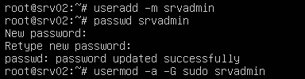

run nebula as a service
I recently looked at using Nebula to create a private network between a few devices, my post here goes through the setup process. Nebula (from the people that brought you Slack) turned out to be a great fit for my requirement so below I'm detailing how to setup devices to automatically connect to the overlay network. I will skip over the install as I covered that in my previous post.
Stage 1: Generate the certs for all devices
- dc-02 - 192.168.99.60 (VPS with WAN IP, Lighthouse)
- pc-01 - 192.168.99.61 (Local VM on NAT)
- pc-02 - 192.168.99.62 (Local VM on NAT)
setting up nebula overlay network
I really like WireGuard as a fast, simple and secure VPN option. Recently I have a requirement to be able to add and remove nodes to a VPN on a semi regular basis and as I do not have any sort of config manager in place (yet!) I need an option that doesn't require making changes on all existing nodes. Nebula (from the people that brought you Slack) is one such option and below is how I've set it up, it's great in that I can add a node, do the bit of work I need to do with it then remove it a few weeks later and I don't need to make config changes on all the other nodes.
Stage 1: Setup Nebula
Nebula is provided as source or as downloadable binaries, there is no pre-built package or installer yet so for the initial setup I'll be configuring three nodes, a Linux VM with a public IP (Nebula refer to this as a Lighthouse) and two internal VMs behind NAT, one Windows Server at home and a Linux VM on a laptop.
- srv1 - 192.168.99.100 (VPS with WAN IP, Lighthouse)
- ka-01 - 192.168.99.101 (Local VM on NAT)
- dc-01 - 192.168.99.150 (Local VM on NAT)
zabbix 4 server installation
Zabbix is a great monitoring solution and is ideal for environments where you might not be adding devices all that often such as SMEs. What I mean by this is it's simple to add devices via the GUI, where as with a solution like Nagios with it's config file management it can be a bit time consuming especially if you don't interact with the config on a regular basis.
I plan to do a few quick guides around Zabbix, my aim is to install it and configure it to monitor a few servers and services I have running so each quick guide will build on top of the other. First up is the install procedure, I'm using a Ubuntu 19.10 Server VM as the OS (40GB disk, 2GB RAM, 1vCPU).
Stage 1: System Install.
Starting with a clean install of Ubuntu 19.10 and ran updates we can then look at the Zabbix system requirements. Current version at time of writing is 4.4 and I'll install with MariaDB and Apache.
Install MariaDB and configure:
sudo apt install mariadb-server sudo systemctl enable mariadb sudo systemctl start mariadb # We run this to set a root password and remove root remote access etc. sudo mysql_secure_installation
setup wireguard vpn
WireGuard is a fast, easy to configure VPN. If you have at least one node with a public IP all devices will be able to communicate with each other regardless of NAT or port forwards. The setup below has three nodes, one VPS node with a public IP and two additional nodes, both behind NAT.

Stage 1: Install WireGuard on our clients.
I'm not going to re-produce the install procedure, WireGuard have very good documentation available here. I installed on three systems, two Ubuntu 19.10 Servers and one CentOS 8.
- ubnt-01 (Local VM)
- ubnt-02 (VPS with WAN IP)
- cent-01 (Local VM)
Once installed you can run sudo wg to check if it's installed, you will get an error if it's not.
extend volume to new physical disk with lvm
The initial OS was installed using LVM so extending it is relativly straight forward. The steps below describe the process, here the Ubuntu server / was running low on space. I added a new disk and extended the existing volume to use the new disk increasing the free space on root /

Example image above shows an initial storage configuration on the left. The right shows additional storage added later and used to extend existing volume.
secure ssh access using keys
In order to secure SSH access to a newly deployed Linux server it is highly recommended you disable password based SSH logins and instead force key based logins as it practically eliminates the possibility of a brute force login attack being successful. There are a few steps to setting this up which I go through below.
Stage 1: Account Setup
We're assuming the only account on first boot is root so first thing we need to do is create a new user for remote access and give it sudo privileges.
useradd -m srvadmin passwd srvadmin usermod -a -G sudo srvadmin

apache ssl using a windows ca
If you've a Windows Domain with a Certificate Authority in place, this procedure will demonstrate how to issue an SSL certificate for an internal Apache server running Linux, CentOS in this case. In the example below we enable https on an intranet.
Stage 1: Generating a CSR for your virtual host.
First we generate a key and certificate request for our intranet using openssl on the Linux server. We can later copy the resulting .csr to our Windows CA to generate the certificate from.
sudo mkdir /etc/httpd/ssl
cd /etc/httpd/ssl
sudo openssl req -newkey rsa:2048 -nodes -keyout intranet.int.techsec.me.key -out intranet.int.techsec.me.csr